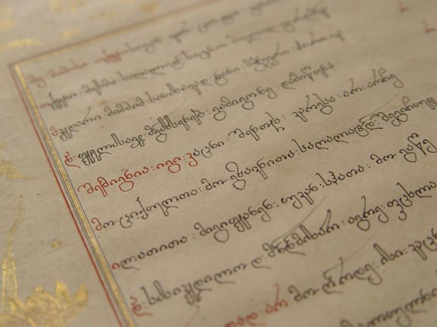
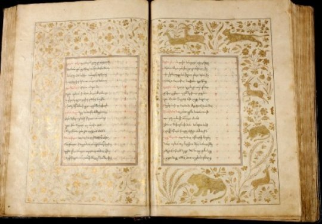

ჩვენს შესახებ
განიცადეთ ქართული კლასიკოსების მაგია და შეისწავლეთ ქართველი პოეტების სულისშემძვრელი ლექსები. იმოგზაურეთ ჩვენთან ერთად საქართველოს მდიდარ კულტურულ მემკვიდრეობაში, სადაც ყოველი დეტალი მარადიულ ისტორიას მოგვითხრობს.


პროექტის ავტორები
სანდრო ზაბახიძე
დათა თეზელაშვილი


ჩვენი მიზნები
Geo Lit მიზნად ისახავს ქართული კულტურული მემკვიდრეობის აღორძინებას ძველი ფილმებისა და კლასიკური ნაწარმოებების ჩვენებით. ჩვენ ქართულ კინოსა და მწერლობას გლობალურად ხელმისაწვდომს ვხდით, ავღნიშნავთ მრავალფეროვნებას და გახსენებთ დიად ნაწარმოებებს.